第19节 卵巢肿瘤的超声诊断
一、卵巢瘤样病变
卵巢瘤样病变包括卵泡囊肿、黄体囊肿、黄体血肿、黄素囊肿、多囊卵巢、卵巢冠囊肿、子宫内膜异位囊肿。
(一)检查方法
同正常卵巢检查方法。
(二)检查内容
1.卵泡囊肿
病灶呈圆形或椭圆形;多为单侧，较大者常位于子宫与膀胱上方;壁薄光滑;囊液清亮，呈无回声;卵巢形态、大小正常(图4-19-1)。
2.黄体囊肿
多呈圆形;大小多为2～3cm或更大;壁光滑;囊液清亮;位于子宫一侧或侧后方。
3.黄体血肿
黄体血肿经历新鲜出血、凝血块形成和溶血3个阶段。新鲜出血期超声下表现为无回声，凝血块形成期表现为网格状回声和不均质高回声，溶血消散期表现为不均质低回声和无回声。黄体血肿的彩超表现有特征性，在黄体囊近卵巢的髓质部可见一条供应血管，放射状发出分支到囊壁，黄体周边可见丰富或较丰富的环状或半环状血流信号(图4-19-2)。
4.黄素囊肿
囊肿较大;呈不规则形、叶状;内部可有分隔，呈车轮状;壁薄而光滑;隔壁上可显示血流信号(图4-19-3)。
5.多囊卵巢综合征(PCOS)
双侧卵巢均匀增大，形态规整;壁厚光滑，回声增强;显示卵巢内有十多个甚至数十个直径约0.2～0.6cm的小囊泡，边界清晰;子宫较小;卵巢动脉血流阻力升高(图4-19-4)。
6.卵巢冠囊肿
病灶呈圆形或椭圆形;多为单侧，较大者常位于子宫与膀胱上方;壁薄光滑;囊液清亮，呈无回声;卵巢形态、大小正常(图4-19-5)。
7.子宫内膜异位囊肿
(1)均匀稀疏低回声:
常见于病程不长及月经前，囊肿壁薄，内壁尚光滑，囊内回声稀少，均匀分布。
(2)均匀云雾状低回声:
囊壁薄，内壁光滑，囊内回声较多，呈均匀的云雾状低回声，此类回声常为月经期或月经刚结束时。
(3)混合云雾状回声:
囊壁厚薄不均，内壁毛糙，囊内高声区域也呈云雾状，形成不规则团块，此类型病程较长。
(4)实性为主不均回声:
囊壁较厚且厚薄不均，因与子宫粘连，囊壁的一部分由子宫壁形成，内壁更粗糙，囊壁上常黏附有块状、沉积状密集高回声，高低回声区界限较清;有时囊内可见粗细不等的分隔，呈树枝状。此类型病程很长，常为囊内反复出血、血块机化、纤维素沉积等造成的组织细胞局部堆集所致。
(5) CDFI:
囊肿囊壁上可见到少许血流信号，无论囊内回声如何，囊内均无血流信号(图4-19-6)。
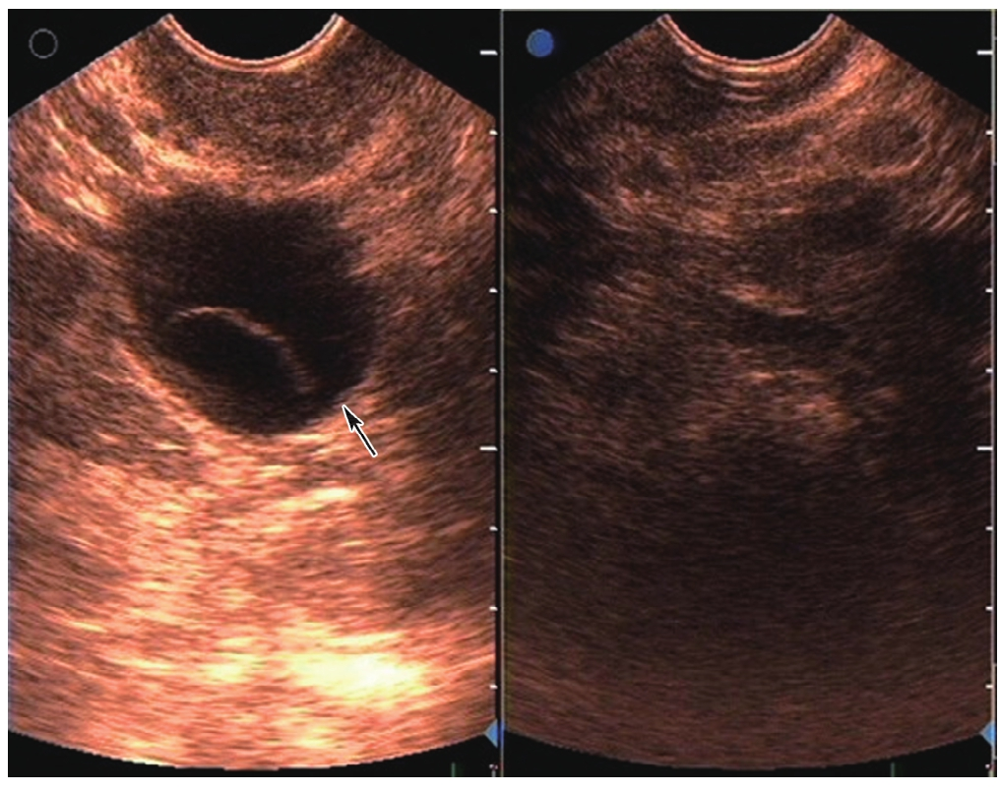
图4-19-1 卵泡囊肿
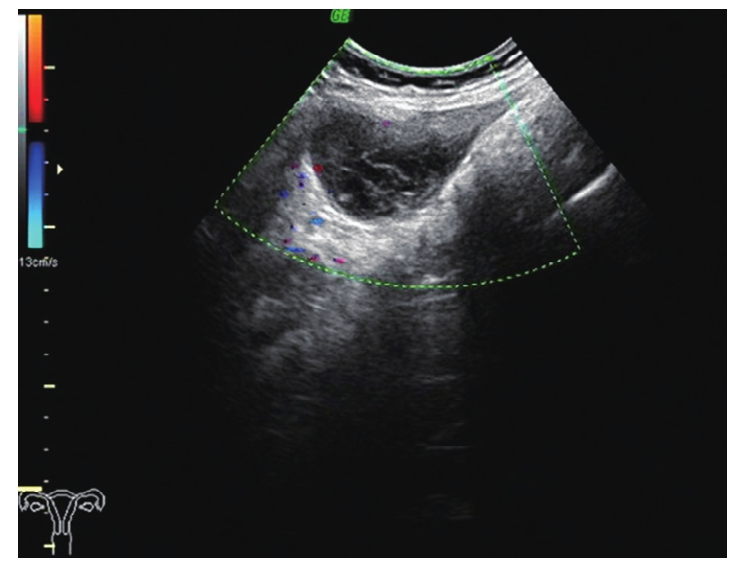
图4-19-2 黄体血肿
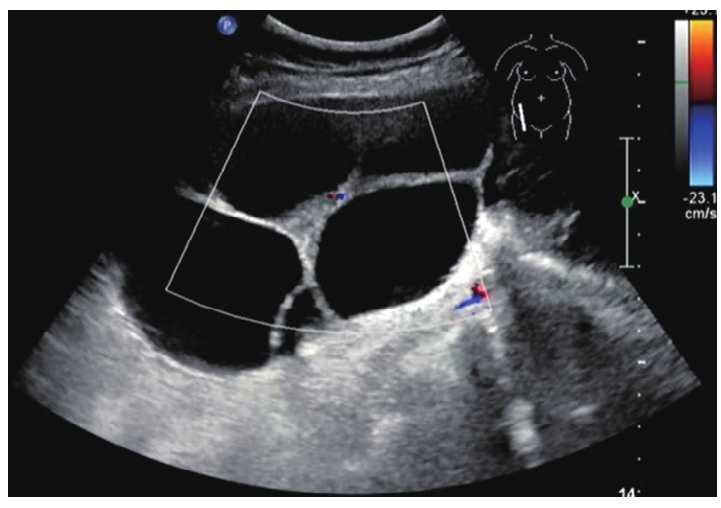
图4-19-3 黄素囊肿
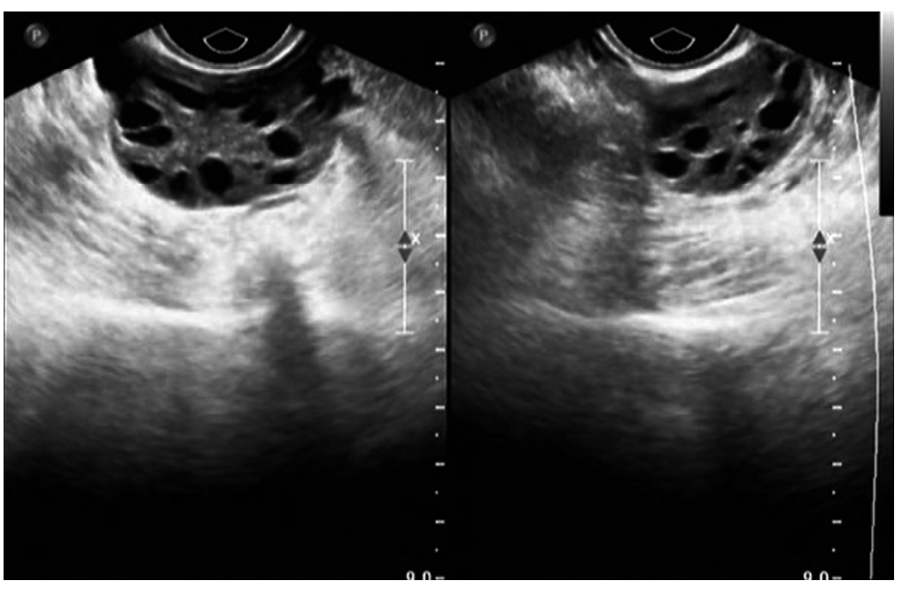
图4-19-4 卵巢呈多卵泡改变
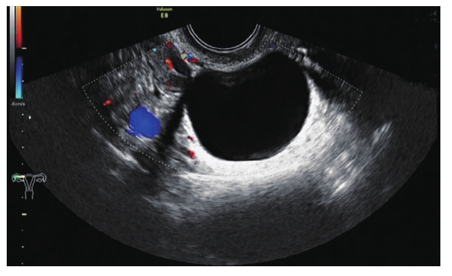
图4-19-5 卵巢冠囊肿
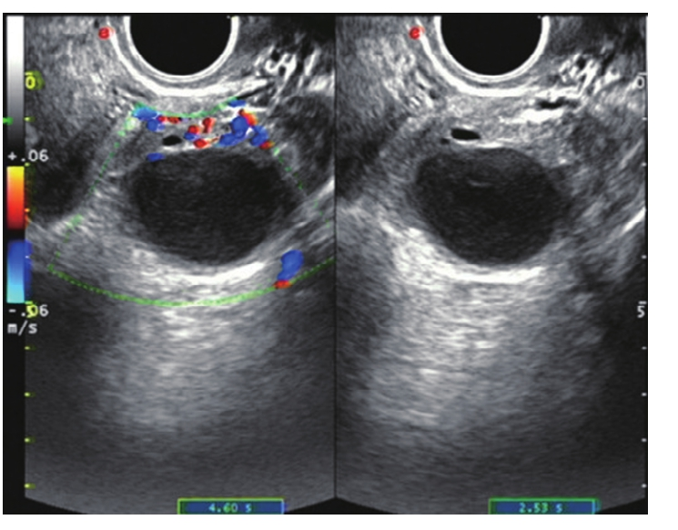
图4-19-6 子宫内膜异位囊肿
【难点解析】
1.卵巢囊肿 常见于黄体血肿，一般在月经后至2个月内可缩小。
2.卵巢癌 声像图呈实性及囊实不均肿块，杂乱低阻血流信号，有时伴大量腹腔积液，有转移。重度内膜异位囊肿也可有胸腔积液、腹腔积液，CA125水平升高，超声显示恶性，应慎重鉴别。
3.畸胎瘤 以较均匀少量脂肪组织为主，瘤内有散在漂浮点，有毛发、牙齿回声。两者分层原理不同，在子宫内膜异位囊肿分层下面为密集光点，上方为清亮液，畸胎瘤所含脂肪成分比重低，表现为上方密集光点，而下方为清亮液。
4.盆腔脓肿 根据病史、症状来鉴别。
5.卵巢子宫内膜异位囊肿超声分型除均匀点状型外，实体型、混合型、多囊型均易误诊卵巢恶性肿瘤，前者二维超声类型多样性的病理学基础是囊内反复出血、凝血、吸收或形成血块及机化，而这些组织一般无血管可与肿瘤组织相区别，后者存在大量的新生肿瘤血管，血流动力学特征为低阻力高速血流。
二、卵巢赘生性肿物
卵巢赘生性肿物包括浆液性囊腺瘤与浆液性囊腺癌;黏液性囊腺瘤与黏液性囊腺癌;良性畸胎瘤与恶性畸胎瘤;卵巢实性与偏实性肿瘤;卵巢转移性肿瘤。
(一)检查方法
同正常卵巢检查方法。
(二)检查内容
1.浆液性囊腺瘤与黏液性囊腺瘤
(1)浆液性囊腺瘤:
较常见，多中等大小，单侧，可分单纯性浆液性囊腺瘤和浆液性乳头状囊腺瘤。
浆液性囊腺瘤小或中等大，呈圆形或椭圆形，单侧，形态规整;囊壁较光滑;囊液稍混浊或清亮，乳头状浆液性囊腺瘤由内壁突出的小乳头似毛刷状或乳头较大并突向囊腔;囊内分隔较少见;腹腔积液少见(图4-19-7)。
(2)黏液性囊腺瘤:
黏液性囊腺瘤为较常见的卵巢良性肿瘤，约占卵巢肿瘤的21.7%。
黏液性囊腺瘤大小不等，大者可达足月妊娠子宫样大小;囊壁较厚，内壁光滑;多数可见分隔，分隔或多或少，光滑，囊内液体含中等回声颗粒，较大囊肿内有时可见梭状“胶冻体”，中等回声影像贴于囊肿内壁(蛋白颗粒凝集而成) ;隔上可显示星点状血流信号(图4-19-8)。
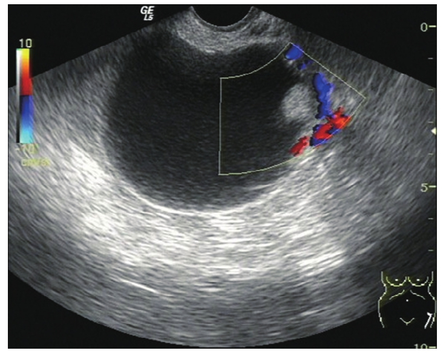
图4-19-7 浆液性囊腺瘤，可见乳头
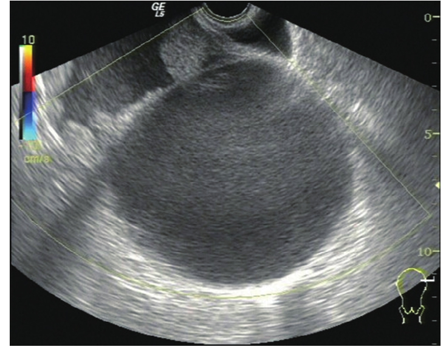
图4-19-8 黏液性囊腺瘤
2.浆液性囊腺癌与黏液性囊腺癌
(1)浆液性囊腺癌:
是临床上最常见的卵巢恶性肿瘤，约占卵巢恶性肿瘤的40%～60%，半数为双侧，乳头可穿过瘤壁向外生长。
浆液性囊腺癌中等或较大，呈圆形或椭圆形，表面光滑或不规则;囊壁较厚;多显示囊实性，囊液清亮或混浊，内壁有毛刷状小乳头，强回声粗大乳头，囊内呈实性或低回声实块，乳头突破囊壁向外蔓延，囊壁不清，隔变厚呈实块;血流较丰富;多伴有腹腔积液。
(2)黏液性囊腺癌:
黏液性囊腺瘤生长缓慢，约5%衍变为黏液性囊腺癌，较浆液性囊腺瘤恶变率低。癌变可局限于囊肿某一部分或扩展至整个囊腔，癌变后为混合性或偏实性。
肿瘤较大，可至足月妊娠子宫大小;壁厚，多光滑，表面凹凸不平;以隔为主，由隔构成各种各样的图像，如芦苇状、毛掸状、网状、车轮状等，另有特殊型为孤立大块状(隔聚集而成，较疏松) ;隔上可见丰富的低阻血流信号;常合并腹腔积液。
3.良性畸胎瘤与恶性畸胎瘤
(1)良性畸胎瘤:
较常见，占卵巢良性肿瘤的16.4%。良性实性畸胎瘤较少见，单纯型良性畸胎瘤以脂类为主，复杂型良性畸胎瘤为大量多胚层分化组织，且排列混乱。发生于任何年龄，多见于20～40岁，由于肿瘤成分特殊，活动度大，容易并发蒂扭转。
良性畸胎瘤多中等大小，圆形或椭圆形，多为单侧;壁较厚，清晰或不清;囊内显示飘浮光点，如面团征、发团征、脂液分层征;内可显示强回声光团、光带(图4-19-9)。
(2)恶性畸胎瘤:
卵巢恶性畸胎瘤为恶性生殖细胞肿瘤，含有未成熟或胚胎性混合组织，AFP升高，多发生于年轻女性，占卵巢肿瘤的0.2%。
肿瘤较大，呈圆形、椭圆形或欠规则;瘤壁较厚;内部回声较复杂，可见较典型畸胎瘤特异征象，如发团征、脂液分层征等，并有分隔及低回声实性团块;内部血流较丰富(图4-19-10)。
4.卵巢实性与偏实性肿瘤
卵巢实性与偏实性肿瘤种类很多，如纤维瘤、勃伦那瘤、子宫内膜样肿瘤、无性细胞瘤、粒层细胞瘤、卵泡膜细胞瘤、卵黄囊瘤等。其中纤维瘤、勃伦那瘤及卵泡膜细胞瘤为良性肿瘤，其余均为恶性。
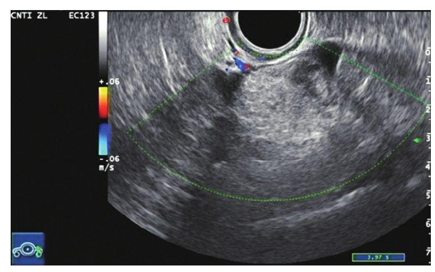
图4-19-9 成熟型畸胎瘤
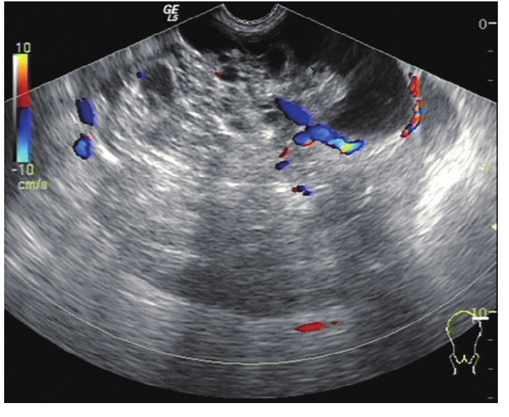
图4-19-10 未成熟型畸胎瘤
(1)纤维瘤:
卵巢纤维瘤较少见，占卵巢肿瘤的2%～3%，为良性。
肿块中等大小，多呈圆形，边缘常较规则;内部回声较低，后方伴有衰减;肿瘤质地越致密、声像图上回声越低，有时易误诊为囊性，但后方回声衰减可资鉴别;可伴胸腹腔积液(图4-19-11)。
(2)卵泡膜细胞瘤:
呈圆形;轮廓清晰，有包膜;内部多呈均匀低回声，往往伴有后方回声轻度增强，酷似囊性结构，但仔细分析无明确囊壁回声形成(图4-19-12)。
(3)卵巢颗粒细胞瘤:
卵巢颗粒细胞瘤约占卵巢肿瘤的1%，多发生于绝经期前后女性，分泌雌激素，出现不规则阴道流血等(图4-19-13)。
卵巢颗粒细胞瘤较小或中等大，圆形或肾形;包膜光滑完整;较小时常在髂窝内见长圆形呈蜂窝状肿物，较大时为实性，但较疏松;子宫增大，内膜增厚。
(4)卵黄囊瘤(内胚窦瘤) :
卵巢卵黄囊瘤多发生于年轻女性，多为单侧，中等大小，生长迅速，预后不佳。
肿瘤中等或较大，不规则;包膜可不完整，边界欠清;回声不均，中央部多为实性中强回声，周边可见小囊围绕。
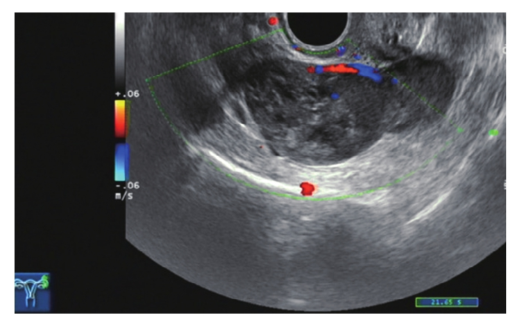
图4-19-11 卵巢纤维瘤
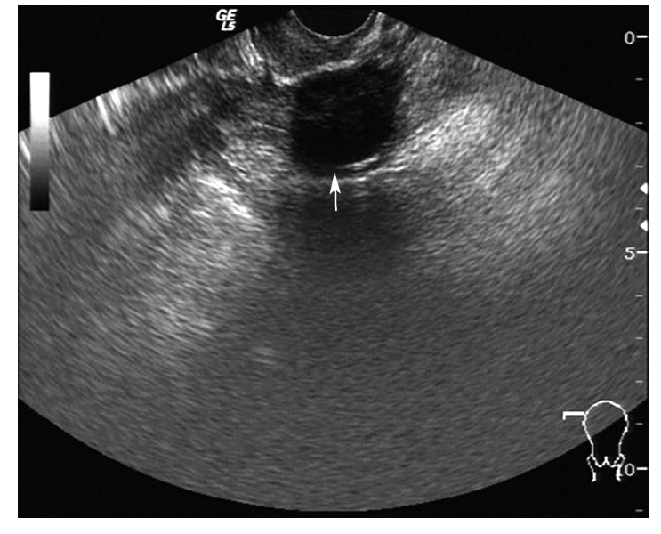
图4-19-12 卵泡膜细胞瘤(箭头)
5.卵巢转移性肿瘤
任何部位的原发性肿瘤均可转移至卵巢，来自胃肠道肿瘤的约占80%，其次为来自生殖道肿瘤(如子宫内膜癌、宫颈癌等)，少数来自乳腺癌和呼吸道癌。
卵巢转移性肿瘤多为双侧性实质性肿块，一般两侧肿瘤大小、形态基本相似，呈肾形;切面上为实质性回声，可见多个小囊腔分布在实质性部分中，局部出血坏死可以形成相对较大的不规则的囊性结构;常伴有腹腔积液征;肿瘤内部血管分布较原发性卵巢恶性肿瘤明显减少，血管阻力降低不明显(图4-19-14)。
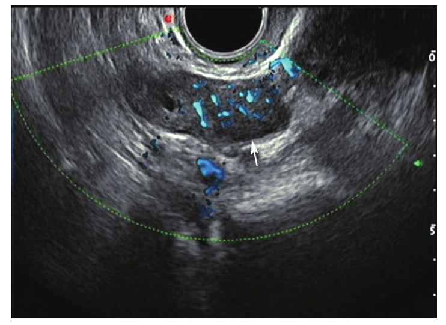
图4-19-13 颗粒细胞瘤(箭头)
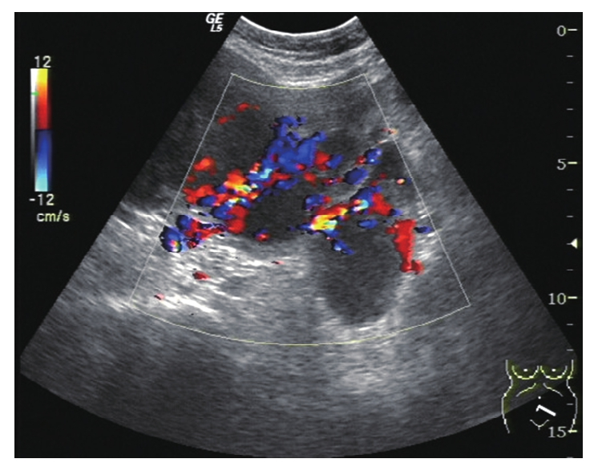
图4-19-14 卵巢转移性B细胞淋巴瘤
【难点解析】
卵巢非赘生性囊肿一般直径＜5cm，多能自行消退，此类囊肿形态学上的改变易与卵巢赘生性肿瘤混淆，如黄体血肿及巧克力囊肿，因囊内为出血病变，因此超声表现为多样性，易误诊为卵巢恶性肿瘤;而直径＜5cm的浆液性囊腺瘤易误诊为功能性囊肿，其鉴别关键因素在于短期内反复超声检查，严密观察肿块超声声像图变化特点及血流动力学改变，进而判断此肿块是赘生性还是非赘生性，是良性还是恶性。若短期内卵巢肿块超声声像图发生改变以及在4～8周后自然消失，首先考虑卵巢非赘生性肿物。
对卵巢肿瘤赘生性与非赘生性、良性与恶性的超声鉴别诊断，应首先经二维超声观察肿瘤的形态和内部结构以及对腹腔积液的观察，并用彩色多普勒观察肿瘤的血流分布情况，以提高卵巢肿瘤的定性诊断准确性。
单房囊腺瘤易被误诊为卵巢单纯性囊肿和巧克力囊肿，需病理检查诊断，含不规则分隔的囊腺瘤与粘连肿块有时不易鉴别，可根据多普勒给予鉴别。
第20节 滋养细胞疾病
滋养细胞疾病根据其病变性质分为良性葡萄胎、恶性葡萄胎及绒毛膜癌。
一、良性葡萄胎
良性葡萄胎为胎盘的一种良性病变，又称为水疱状胎块，主要为构成胎盘的绒毛组织发生水肿变性(图4-20-1)。
(一)检查方法
同正常早期妊娠检查方法。
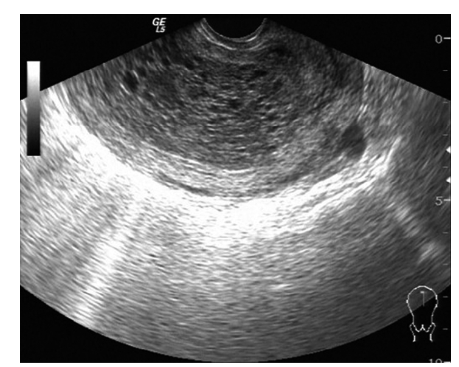
图4-20-1 良性葡萄胎
(二)检查内容
1.子宫大小与孕周是否相符。
2.宫腔内有无蜂窝样回声。
3.两侧附件区有无囊肿。
4.有条件者可通过彩超观察子宫内血流是否丰富。
【难点解析】
1.早期葡萄胎须和滞留流产进行鉴别。
2.临床疑及葡萄胎，虽可探及胎儿回声，应注意有无部分葡萄胎存在。
二、恶性葡萄胎及绒毛膜癌
(一)检查方法
同正常早期妊娠检查方法。
(二)检查内容
1.子宫是否增大。
2.子宫肌层是否疏松，有无空洞或病灶。
3.有条件者可通过彩超检测子宫内血流情况(图4-20-2)。
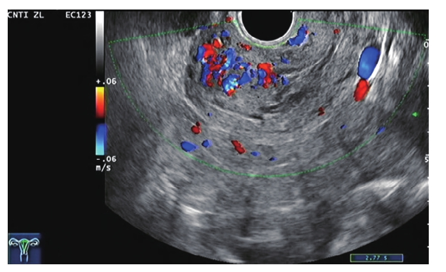
图4-20-2 恶性葡萄胎
【难点解析】
1.恶性滋养细胞肿瘤的病灶主要在子宫肌壁内，其血流之丰富是任何其他子宫肿瘤及疾病所没有的，血流特点为低阻高速，阻力指数很低。
2.当病变范围较局限时，病灶内出现动静脉瘘性频谱，有助于恶性滋养细胞疾病与其他疾病的鉴别。
3.葡萄胎有较特异的声像图表现，故超声容易作出诊断，但仍需结合血HCG及临床症状才能作出更准确的诊断。
第21节 输卵管病变
一、急、慢性盆腔炎
女性盆腔生殖器官及其周围的结缔组织、盆腔腹膜发生炎症时，称为盆腔炎，包括子宫炎、输卵管卵巢炎、盆腔结缔组织炎及盆腔腹膜炎，可一处或几处同时发病，是妇女常见病之一。由于输卵管、卵巢统称附件，且输卵管发炎时常波及“近邻”——卵巢，因此，又有附件炎之称。
(一)检查方法
同正常附件区检查方法。
(二)检查内容
1.附件炎
(1)非特异性改变:
此时仅表现为卵巢正常大小或稍增大，边界欠清晰，形态偏饱满，有时可探及盆腔积液，需与盆腔子宫内膜异位症造成的盆腔粘连及手术后盆腔粘连鉴别。输卵管炎时，在附件区可探及条索状中低回声区，输卵管直径增粗，需与肠粘连鉴别。
(2)囊性改变:
绝大多数炎性肿块，如脓肿输卵管积液等表现为囊性结构，其形态、边界及内部回声各不相同，炎性肿块形态一般较规则，包膜较厚毛糙，内部回声欠清晰;脓肿时可见粗光点，严重的输卵管积液可表现为囊性改变，多呈腊肠型(图4-21-1) ;需与卵巢囊肿巧克力囊肿鉴别;一般卵巢囊肿形态规则、壁薄光滑、张力较高。
(3)囊实性改变:
附件区炎性肿块呈液性与中等回声区夹杂存在的紊乱回声结构，形态较为规则或欠规则，边界清晰，需与巧克力囊肿、畸胎瘤、宫外孕相鉴别。
(4)实性改变:
炎性肿块主要呈中低回声，局部可见小液性暗区，边界欠清晰，形态欠规则(图4-21-2)，多见于慢性盆腔炎或盆腔结核，需与畸胎瘤、卵巢恶性肿瘤相鉴别。
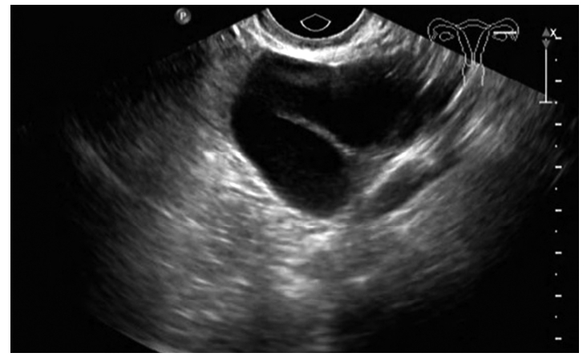
图4-21-1 输卵管积液
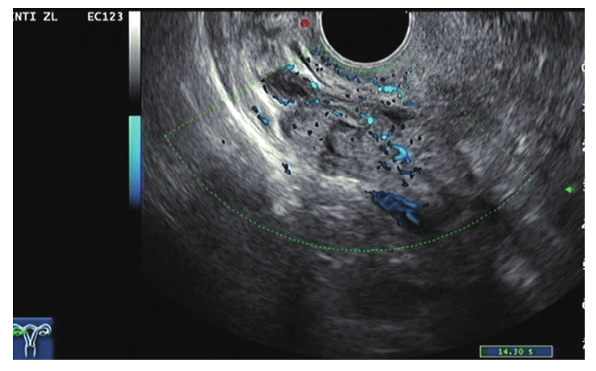
图4-21-2 输卵管结核
2.子宫内膜炎
子宫内膜炎时可探及子宫内膜区回声增强、增厚，有时厚度可占宫体前后径的1/3～1/2，边界较毛糙。需与增殖期子宫内膜或非炎性子宫内膜增生相鉴别，故一般在月经干净后3～5天探查。
3.子宫肌炎
宫体回声较低或增高，颗粒增粗，形态饱满，常伴盆腔积液。
4.宫颈炎
宫颈部回声增强欠均匀，可伴小囊肿，严重时呈宫颈肥厚形态、异常;常伴白带增多，带中有血丝等改变。
5.盆腔积液
大多数盆腔炎均可有不同程度的盆腔积液。严重盆腔炎或盆腔脓肿时，盆腔见大片液性暗区，形态不规则，沿盆腔及子宫周围分布，无明显包膜，可见子宫卵巢悬浮于其中，囊肿时可见粗光点、光斑(图4-21-3)。需与宫外孕破裂出血、腹腔积液等相鉴别。有时月经前亦可出现盆腔积液，需结合临床予以鉴别。
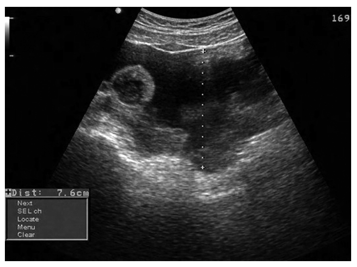
图4-21-3 大量盆腔积液
【难点解析】
1.输卵管卵巢积水与卵巢多房性囊腺瘤鉴别 两者均为多房囊状肿块，不注意时容易误诊。鉴别要点为前者包块的形状不规则，囊内分隔纤细，囊腔多为圆形或管道状，较规则，彩超显示其分隔上难找到血流。卵巢囊腺瘤外形较规则，瘤体有包膜反射，分隔和囊腔不规则，在其囊壁及分隔上常显示血流信号。
2.亚急性感染性肿块与恶性肿瘤难以区分。当附件肿块无法显示输卵管的特征性管道状结构时，主要的鉴别要点为病史和双合诊检查，若近期有下腹疼痛、发热、脓性白带、附件包块触痛等，则提示有炎症存在，必要时在短期抗感染治疗后复查。
二、原发性输卵管癌
原发性输卵管癌(primary carcinoma of fallopian tube)是一种少见的女性生殖道恶性肿瘤。其发病率占女性生殖道恶性肿瘤的0.5%～1.8%。好发年龄为40～60岁，2/3发生在绝经后，1/3发生在更年期。病因迄今尚不清楚，多数学者认为输卵管癌发病可能与慢性炎症刺激有关。因为原发性输卵管癌早期诊断困难，故预后极差，5年生存率为21%～44%左右。
(一)检查方法
同正常附件区检查方法。
(二)检查内容
一般情况下，超声检查不易显示输卵管，在输卵管周围积液和输卵管异常增粗时，超声可以较容易显示。
1.混合性回声肿块
超声表现为混合性回声肿块，内见无回声区。当管腔内充有肿瘤组织，输卵管表现为囊性肿物向内突出的中等回声，并可探及血流信号(图4-21-4)。
2.宫腔积液征象
输卵管内液体进入宫腔，超声表现为宫腔分离，内部充满无回声(图4-21-5)。
3.周围转移征象
原发性输卵管癌可以侵犯周围组织，表现为较大不规则囊实性肿物，肿块边界不清，与周围组织结构分辨不清，肿物内血流丰富，盆腔和(或)宫腔游离无回声。彩色多普勒超声可以观察到原发性输卵管癌包块实性区及厚壁上血流情况，为低阻血流。
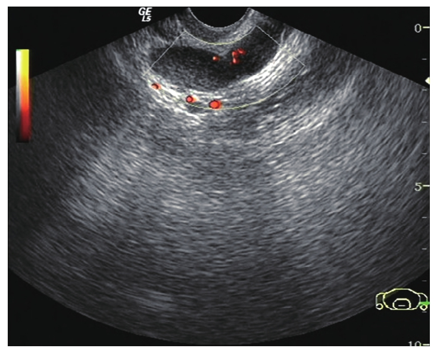
图4-21-4 输卵管浆液性腺癌
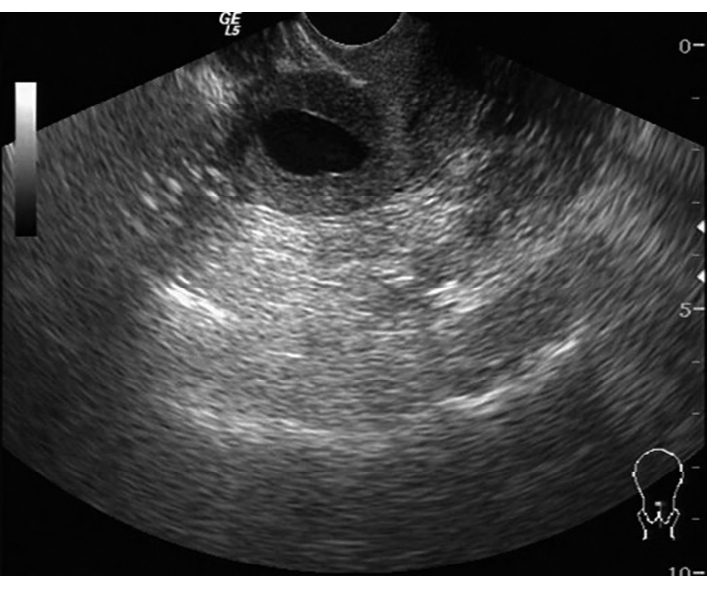
图4-21-5 宫腔积液
【难点解析】
彩超显示宫旁肿块囊壁上或实质部分内见散在血流信号，与卵巢恶性肿瘤相似，血流呈低阻力型，RI＜0.4。
第22节 其他盆腔病变
一、盆腔子宫内膜异位灶
具有周期性生长功能的子宫内膜组织出现在盆腔器官的腹膜面称为盆腔子宫内膜异位症。
(一)检查方法
同正常子宫、双附件区检查方法。
(二)检查内容
1.二维超声表现
盆腔内子宫内膜异位病灶较小、无临床症状时，往往无超声表现。采用经阴道探头扫查，可以检查出直径小至1cm的异位灶，但位于盆腹腔较高部位的小病灶难以检出。直径在2cm以上的子宫内膜异位囊肿经腹超声可以检查出来，根据不同生长部位有各种表现。
(1)盆腔子宫内膜异位灶:
在子宫旁的陷凹内发生的异位病灶反复出血，有两种超声表现:①局限性出血:囊内血液较浓稠，表现为宫旁、卵巢外囊性低回声肿块，内回声类似卵巢巧克力囊肿的云雾状低回声，囊肿形态不规则;②宫旁不规则、多角形局限性液性暗区，内有稀疏点状回声。
(2)宫颈子宫内膜异位囊肿:
在宫颈组织内呈圆形、类圆形云雾状低回声区，边界较清晰，内壁粗糙，其囊壁由宫颈组织构成，囊内血液浓稠时呈等回声;彩超显示内无血流信号;经阴道扫查图像清晰，可与纳氏囊肿鉴别，后者囊壁光滑，囊内液体清亮，呈无回声。
(3)腹壁瘢痕子宫内膜异位囊肿:
腹壁瘢痕上各层均可发生，局部腹壁增厚，病灶呈梭形或椭圆形，边界较模糊，内部为不均质低回声，扫查时腹壁局部有压痛。
(4)膀胱子宫内膜异位囊肿:
子宫内膜异位在膀胱壁上形成低回声小囊性肿块。
(5)直肠壁子宫内膜异位囊肿:
子宫内膜异位在直肠壁上，形成低回声囊性肿块。
2.彩色多普勒超声表现
无论病灶在何处，异位囊肿的囊内均无血流信号，仅在囊壁上偶可记录到中等阻力低速血流。
【难点解析】
盆腔内子宫内膜异位病灶较小、无临床症状时，往往无超声表现。直径在2cm以上的子宫内膜异位囊肿经腹超声可检查出来，根据不同生长部位有各种表现。
二、子宫切除术后盆腔
(一)检查方法
1.经腹超声检查时，膀胱充盈，采用纵切、横切及多切面扫查方法。扫查阴道及残余宫颈、宫颈残端、双侧附件区等。重点扫查盆腔内有无其他病变，如囊肿、肿瘤、盆腔积液等。
2.经阴道超声检查同上。
(二)检查内容
1.子宫切除术后盆腔
经腹超声扫查可见盆腔正中、膀胱后方无子宫结构，子宫全切除者可见阴道闭合气线，阴道线呈线状强回声，其上方无任何结构;次全子宫切除者在膀胱后方可以显示宫颈结构，因没有宫体做参照，手术残留宫颈形态各异，经腹扫查宫颈结构往往难以辨认，经阴道超声则可较清楚地观察到宫颈管结构。若保留卵巢，在附件区可以扫查到卵巢结构。
2.子宫切除术后阴道残端血肿
阴道闭合气线上方或一侧可见低回声肿块，形态不规则，边界欠清，内为不均质或云雾状低回声，有时呈液性暗区，暗区内见细网状回声。结合术后有阴道不规则流血、下腹疼痛病史可以确诊。当出血时间长、血肿机化时，可以形成阴道上方实性低回声结构，易与肿瘤复发、残留宫颈等混淆，可根据血肿内有无彩色血流信号鉴别。
3.子宫切除术后盆腔积液、积脓
盆腔内无子宫声像，盆腔积液表现为阴道闭合气线上方不规则液性暗区(图4-22-1、图4-22-2) ;若暗区内有云雾状回声，结合患者有腹痛、发热，说明有盆腔感染积脓。
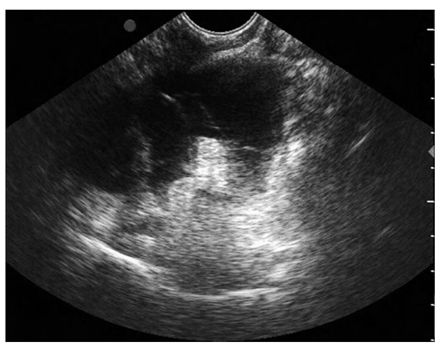
图4-22-1 子宫全切术后，阴道残端局限性积液
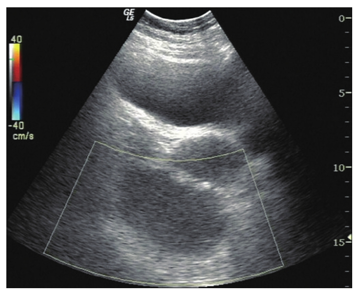
图4-22-2 子宫次全切术后，盆腔内局限性积液
4.子宫切除术后盆腔腹膜囊肿
为远期并发症，由于术后粘连，在盆腹腔的肠管、大网膜及内生殖器官之间形成包裹性积液，表现为盆腹腔内囊性肿块，壁薄，内为无回声，有多条细带分隔，根据手术病史、囊肿分布特点可与巨大卵巢囊肿、输卵管积水等鉴别。
5.恶性肿瘤术后复发
在阴道闭合气线上方可见实性肿块，边界不清，形状不规则，内部回声多为实性不均质低回声，彩超检查在病灶较小时难以显示出瘤内血流，肿块较大时多数可以显示散在血流信号，并记录到低阻力血流频谱(图4-22-3)。
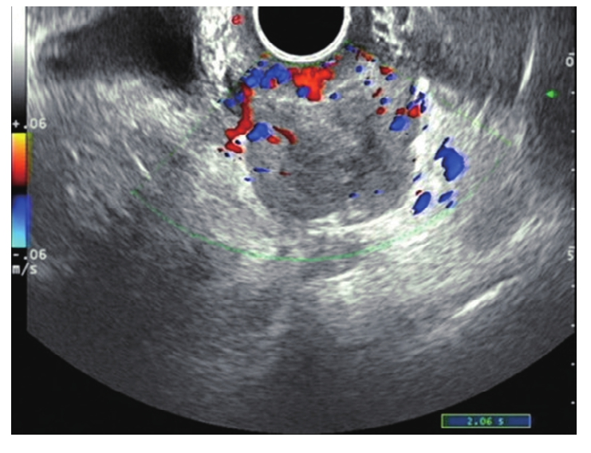
图4-22-3 子宫全切术后，卵巢癌复发灶
【难点解析】
经阴道超声检查时，注意患者术后恢复情况。若术后残端未愈合好，不适宜行经阴道超声检查，应行经腹超声检查。
第23节 盆腔血管疾病
一、盆腔淤血综合征
盆腔淤血综合征是由于多种因素引起的盆腔静脉血管充血、扩张和淤血，是引起妇科慢性疼痛的重要原因之一。
(一)检查方法
同正常附件区检查方法。
(二)检查内容
1.二维超声
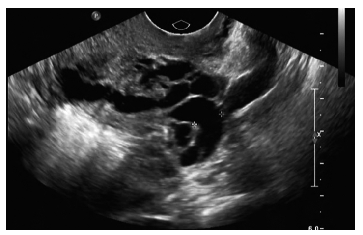
图4-23-1 盆腔淤血综合征
后位子宫，子宫稍大或大小形态正常，肌层回声均匀或稍不匀;宫旁显示管道状、串珠状、麻花状低或无回声区，经阴道超声显示其内云雾状回声，呈沸水样滚动;可测出管道内径增宽，常＞1cm，严重者可＞2cm (图4-23-1) ;直肠子宫陷凹可有少量积液。
2.彩色多普勒超声
宫旁可见增粗条状或斑片状红蓝相间的血流信号，呈湖泊状，大多数为静脉性频谱;子宫和卵巢内有时可见增多的静脉血流(图4-23-2)。
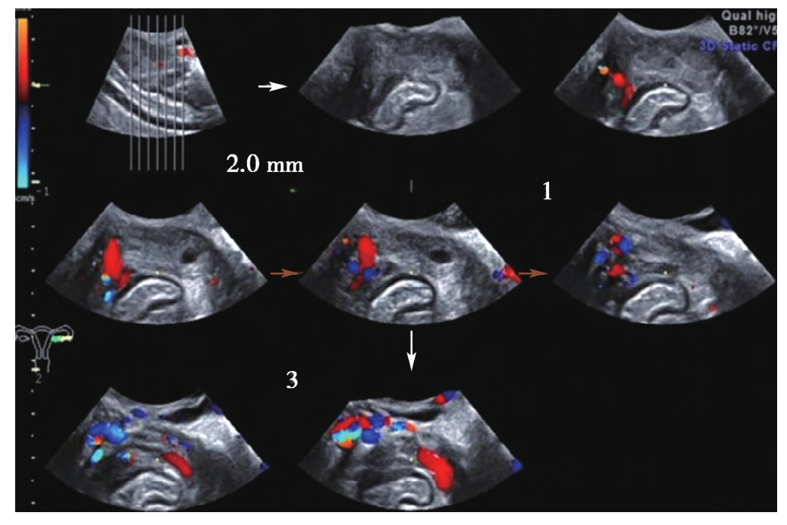
图4-23-2 宫旁可见增粗条状或斑片状红、蓝相间的血流信号
【难点解析】
盆腔淤血综合征的超声诊断特点为宫旁显示管道状、串珠状、麻花状低或无回声区，彩超宫旁可见增粗条状或斑片状红蓝相间的血流信号，呈湖泊状，大多数为静脉性频谱。
二、盆腔动静脉畸形
盆腔动静脉畸形(arteriovenous malformations，AVM)是罕见的妇科疾患，包括子宫动静脉畸形和宫旁血管畸形，子宫血管畸形是一种少见的导致阴道大出血的原因。
(一)检查方法
同正常附件区检查方法。
(二)检查内容
1.二维超声
盆腔内可见囊性肿物，呈圆形，内为液性暗区，边界清;采用高分辨力阴道探头可以显示暗区内有运动着的低回声，如沸腾水样;病灶位于子宫肌层内、内膜下时，为子宫血管畸形;位于子宫外侧为宫旁血管畸形。
2.彩色多普勒超声
彩超显示囊肿内充满血流信号，似假性动脉瘤，可记录到动静脉瘘性频谱。
【难点解析】
盆腔动静脉畸形通过彩超可快速诊断，彩超显示病灶内充满血流信号，可记录到动静脉瘘性频谱。
第24节 超声造影在妇产科超声中的应用
一、子宫肌瘤
子宫肌瘤是女性生殖器官中最常见的良性肿瘤，常规超声一般可诊断子宫肌瘤，但仍存在一定的误诊可能，而超声造影能连续实时观测肿瘤微循环灌注的动态变化，大大提高了超声发现病变及定性诊断的能力，减少了常规超声的误诊。
(一)检查方法
静脉盆腔超声造影，即将造影剂经静脉注入体内，随血流到达病灶内，增强病灶内血流的散射信号强度，借以增强病灶、组织靶器官的超声回声强度及多普勒信号强度，提高超声对组织靶器官及病灶的细微结构的分辨能力和血流信号显示的敏感性，并反映组织血流灌注状况。
检查时先进行子宫及附件常规扫查，记录病灶数目、位置、大小、二维及CDFI表现，然后选择造影条件，设置探头频率和机械指数。患者取仰卧位，最好选择左侧上肢进行静脉穿刺，注射造影剂，同时开启计时器，嘱患者不说话、不活动，平稳呼吸，观察并实时记录病灶造影增强与消退情况。嘱患者坐位或平卧30分钟，观察有无不良反应。
(二)造影剂
常用的有Levoist和SonoVue。现在使用较多的为后者。
(三)注意事项
1.抽吸造影剂时应倒置小瓶后抽取，切忌回推空气入瓶内，以免破坏微泡。如不慎抽吸过量亦不应再注入瓶内。
2.每次抽取前均需振荡小瓶5秒，以免药液分层。
3.抽取药液后应尽快注射，故应提前做好仪器调节等准备工作。
4.穿刺静脉最好选择肘部粗大静脉，采用20G或18G静脉套管针。
5.连接三通管时，应将含造影剂的注射器连接于平行血管的接口上，使药液通过直接通路进入血管，尽量减少微泡的破坏，而将含生理盐水的注射器连接于垂直血管的接口上。
【造影表现及难点解析】
子宫肌瘤为无包膜的实性肿瘤，与周围肌组织有明显界线，虽无包膜，但肌瘤周围的子宫肌层受压形成假包膜，子宫动脉由外穿入假包膜供给肌瘤营养，围绕肌瘤呈弧形走行，形成肌瘤的外层血管网，并放射状分支供应瘤体内部;而带蒂的浆膜下及黏膜下肌瘤则由蒂部动脉供应。较大的肌瘤常发生不同类型的变性，如玻璃样变性、脂肪变性、囊性变及钙化，部分可发生恶性变，即肉瘤样变性。
子宫肌瘤的超声造影表现与肌瘤类型、大小及内部是否合并变性或坏死有关。超声造影可观察到瘤体与肌层的血流灌注状态及其关系，瘤体供血动脉的显示及增强水平的变化可为鉴别诊断提供更多有用的信息(图4-24-1、图4-24-2)。
1.较大的肌壁间肌瘤在增强早期，造影剂首先灌注假包膜中的血管，呈细环状高增强，并分支进入瘤体内部，随后整个瘤体均匀高增强(与周围肌层相比) ;但是一些小的肌壁间肌瘤由于对周围组织挤压不明显，无典型外层血管网灌注，而表现为造影剂几乎同时进入，整个瘤体均匀增强。增强晚期，瘤体内部造影剂消退较正常肌层呈低增强，而较大瘤体的假包膜消退相对较慢，始终呈稍高增强。由于增强晚期肌瘤内部与假包膜造影剂消退时间的差异使瘤体有明显包膜感，可准确显示肌瘤的数目、大小、位置及边界。
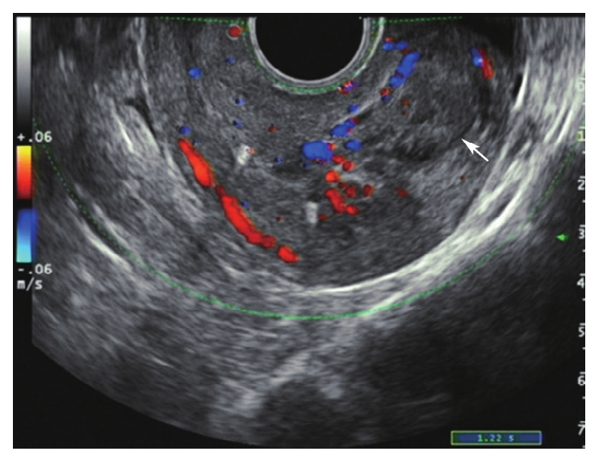
图4-24-1 子宫肌瘤彩色多普勒血流图像
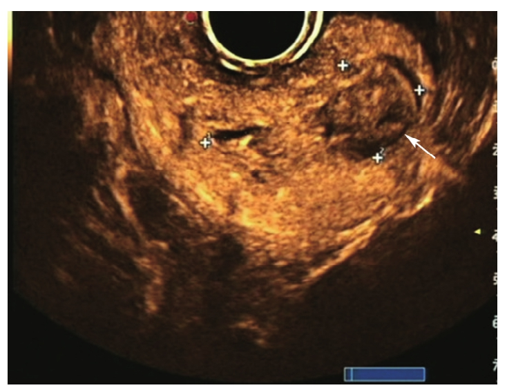
图4-24-2 子宫肌瘤超声造影图像
2.对于浆膜下、黏膜下、阔韧带肌瘤及较大的宫颈肌瘤，当蒂部血管较细小，血流流速低或位置较深时，CDFI往往因无法显示蒂部血流，难以清晰显示瘤体与子宫间的血供关系，导致诊断信息不足而难以作出正确判断。超声造影可显示瘤体与肌层的血流灌注状态及其关系。增强早期带蒂的浆膜下及黏膜下肌瘤可观察到来源于子宫动脉的蒂部的供血动脉首先灌注，并分支进入瘤体内部，肌瘤呈均匀高增强，与子宫肌层增强时间及水平接近，即具有“同步灌注”的特点。增强晚期瘤体内部造影剂撤退早于肌层，呈稍低增强，边界清晰。瘤体较大难以显示蒂部的宫颈肌瘤及阔韧带肌瘤，仍具有与子宫肌层“同步灌注”的特点，借此可与卵巢来源的肿瘤鉴别。
3.肌瘤变性坏死时，坏死区域无造影剂灌注，显示为无增强。肌瘤肉瘤样变性时可见多条滋养血管同时灌注，瘤体内部造影剂分布明显不均匀，并见大片充盈缺损区。增强晚期包膜不明显，病灶区与肌层分界不清。
【鉴别诊断】
1.肌壁间子宫肌瘤和子宫腺肌瘤在临床表现及超声表现上有许多相似之处。子宫肌瘤和腺肌瘤在造影增强方式上明显不同，子宫肌瘤以周边网状型增强模式为主，腺肌瘤则以同步增强型和缓慢向心型为主。
2.子宫黏膜下肌瘤常需与子宫内膜息肉鉴别。当息肉回声较低，子宫内膜基底层显示欠清，蒂部血流显示不清时，常规超声常易误诊。超声造影除可显示蒂部血流外，还可显示典型子宫肌瘤灌注及消退特点，有利于与子宫内膜息肉鉴别。
3.常规超声对肌瘤变性及肉瘤样变的诊断较困难。超声造影可动态显示瘤体内部的血流灌注情况，当肌瘤发生玻璃样变、囊性变及钙化等时，因变性及坏死组织处于无血供状态，超声造影时该部分组织无造影增强，其余部分则仍具有典型肌瘤的灌注及消退特征。当肌瘤发生肉瘤样变时，变性多从中心开始，向周围弥漫性播散，内部常有出血及坏死，与肌层分界不清，所以造影时无假包膜先灌注后内部血管网再灌注的特征性表现，而是无变性区域表现为多血管呈不规则分支状同时灌注，变性坏死区表现为大片造影剂充盈缺损区，造影剂消退时亦无明显包膜感，与肌层界限不清，借此可与其他良性变性加以鉴别。
二、子宫腺肌症
子宫腺肌症与子宫肌瘤均是妇科常见疾病，两者在临床表现和体征上均有许多相似之处，但治疗方法却明显不同，因此治疗前对两者进行准确鉴别具有重要意义。然而两者声像图有重叠现象，鉴别诊断具有一定的困难，无论临床还是超声均有较高的误诊率及漏诊率。超声造影成像能实时、动态、连续地观察病灶微循环造影剂灌注的全过程，为局灶性病变提供客观的鉴别诊断依据。
检查方法
同静脉盆腔造影检查方法。
【难点解析】
子宫腺肌瘤是子宫腺肌症的一种特殊表现形式，由于异位的内膜腺体和间质侵入子宫肌层呈不均匀性或局限性分布，周围肌纤维增生肥大，组织剖面上增生的肌组织呈类似肌瘤的“漩涡样”结构，而非真性肿瘤。增强早期，子宫腺肌瘤表现为多条血管呈不规则分支状同时灌注，无包绕血管，病灶区内部造影剂分布明显不均，呈不均匀高增强，有学者形容其造影表现呈“乱箭齐发”的同步灌注状态。增强晚期呈不均质稍低增强，边界不清，包膜不明显。
三、子宫内膜良性病变
生理盐水子宫腔造影，是指将生理盐水通过导管经宫颈管注入子宫腔，使宫腔扩张、内膜分离，从而在经阴道超声下更好地评价内膜、内膜下情况及宫腔内病变，包括内膜及宫腔内有无病变、病变为弥漫性或局灶性以及局灶性病变的位置、数目、大小、边界、形态、回声、基底部宽窄等。使一些患者避免了不必要的宫腔镜或诊断性刮宫等创伤性检查。该项检查操作简单、省时、安全、患者易接受、并发症少、价格相对低廉。
检查方法
1.造影导管
常用的宫腔造影管为普通带水囊的52F导尿管，将其插入宫颈管时操作相对较困难费时，但价格便宜。新出现的专用宫腔造影管，有一段较硬的部分供操作者把持，以便更好地将导管前端可弯曲部分通过宫颈管置入宫腔内;另有一种无水囊而用活塞堵住宫颈外口的Goldstein导管外径只有8mm，患者不适感最轻。对宫颈管狭窄患者，可先适当扩张宫颈后插入导管。
2.禁忌证
禁忌证包括妊娠及妊娠可能、盆腔感染、不明原因盆腔压痛。
3.操作时间选择
绝经前妇女宜在月经周期前10天内，此阶段为内膜增殖期，内膜较薄，局部病变如息肉更易显示;另外，为避免妊娠及妊娠可能，也应选择于排卵之前的内膜增殖期行生理盐水子宫腔造影检查。对于绝经后阴道出血的妇女，最好选择在阴道出血干净后进行，阴道出血不是生理盐水子宫腔造影的禁忌证，但是宫腔内血块可能影响对检查结果的判断，导致假阳性。对于激素替代治疗的患者，也应选择于内膜增殖期进行。
4.操作方法
患者在操作前半小时可酌情服用少量镇痛药物以缓解不适感，不常规使用抗生素，有盆腔炎病史及细菌性心内膜炎的患者除外。造影前常规行阴道超声检查了解子宫及双侧附件区情况。患者排空膀胱后取截石位，无须麻醉，操作者先行双合诊检查子宫及宫颈位置，然后置入阴道窥器暴露宫颈，常规消毒宫颈及阴道。将导管内充以生理盐水，以排除管腔内气体，导管内气体可造成回声伪像，用卵圆钳夹住造影剂导管尖端将导管通过宫颈管置入内膜腔，避免导管触及宫底。向水囊注入适量无菌生理盐水固定导管以防脱出，取出窥器后将阴道探头放置于阴道内导管旁。在超声直视下调整导管水囊大小及位置，使之堵住宫颈内口防止液体外溢，避免过大引起患者不适。然后于导管尾端接10ml注射器，向宫腔内注入无菌温生理盐水约5～10ml，完成全面矢状(从一侧到另一侧宫角)和冠状(从宫底到宫颈)切面超声扫查观察内膜、内膜下及宫腔内病变后，抽出水囊内液体，观察子宫下段和宫颈。若发现可疑血块，可直接用导管前端拨动可疑病变及观察其是否随水流移动以明确诊断。
5.操作时注意事项
(1)插入导管时操作应缓慢轻柔，避免导管破坏内膜导致假阳性。
(2)拔出导管前先抽出水囊内液体，观察子宫下段及宫颈有无病变，避免漏诊。
(3)为获得清晰的子宫内膜图像，探头必须紧贴子宫颈与阴道穹隆，使子宫处于声场的近区。
(4)测量内膜厚度时，对宫腔内有液体者需分别测量，再相加。
(5)宫腔超声造影检查的时间应在月经干净后3～7日内，可提高宫腔超声造影的诊断准确率。
(6)怀疑有阴道隔膜，常规经阴道超声又不能清晰显示隔膜时，可于阴道内插入较粗的导尿管，于阴道内注入适量无菌生理盐水，可使阴道内结构显示更清晰，行阴道造影时，可使患者适当抬高臀部。
【难点解析】
1.子宫内膜增生
子宫内膜增生在超声注水造影后，宫腔分开，内膜对称性、弥漫性、均匀性增厚，内膜与肌层的界面完整，偶尔内膜增生表现为内膜的局部增厚，多个隆起凸向宫腔，呈花瓣形或不对称增厚，宫腔形态有时呈多角形，其与内膜息肉不易鉴别。此时诊断性刮宫可能漏诊，需要在宫腔镜下取活检以明确诊断。
2.子宫内膜息肉
典型息肉一般为中强回声，内部回声形态均较规则，边界清楚，基底窄，通常可见到蒂，部分可在蒂部或基底部探及滋养血管的血流信号。非典型息肉可表现为内部囊状结构，回声偏低，内部回声不均，宽基底等。
3.黏膜下子宫肌瘤
宫腔造影诊断子宫黏膜下肌瘤时不仅能直接观察到宫腔内的情况，清楚显示肌瘤的个数、大小、部位、起源以及与输卵管口的关系，还能显示出其突入肌壁间的程度，具有临床指导价值，可以评价黏膜下肌瘤经宫腔镜完全切除的可能性。黏膜下肌瘤在生理盐水子宫腔造影检查下能清楚显示肌瘤的位置及其与内膜的关系，更重要的是能较准确判断黏膜下肌瘤突入宫腔内部分所占整个肌瘤体积的百分比，从而指导临床治疗方式。若肌瘤突向宫腔内比例＞50%，选择宫腔镜下切除，若＜50%则需开腹或腹腔镜下手术切除。部分中强回声黏膜下肌瘤与内膜息肉鉴别较困难，鉴别关键点为黏膜下肌瘤向宫腔突出部分的表面可见内膜强回声线包绕，基底处内膜强回声线中断;内膜息肉表面没有内膜强回声线包绕征象，基底处内膜强回声线无中断。
四、子宫内膜癌
宫腔超声造影及静脉盆腔造影均对内膜癌有一定的诊断价值，前者通过宫腔内造影剂的充盈，使扩张的宫腔形成一个良好的透声窗，内膜及病变情况在超声下可清晰显示其大小、形态、位置、边缘、回声、与肌层的关系;后者更有助于评价肌层侵犯程度及鉴别诊断。
检查方法
检查方法:同静脉盆腔造影或生理盐水子宫腔超声造影。
【难点解析】
绝经妇女内膜明显增厚，伴有不规则出血或排液应考虑内膜癌的可能。当癌侵入肌层时，除显示子宫增大外，宫腔注水后宫内可见较典型的强回声或低回声团块，内膜局部与肌层分界不清。内膜癌在子宫腔造影下的表现多样，内膜不规则增厚或较大且形态不规则、宽基底、回声不均的病变均需警惕内膜癌。内膜与肌层分界不清、分界线扭曲变形、宫腔扩张性差，均可作为内膜癌侵犯子宫肌层的征象。
通过观察静脉造影后病变组织血管形态及血流灌注情况，可明显提高肿瘤的定性诊断率。超声造影可以动态反映癌变内部的供血情况，使得影像学观察与肿物功能相结合。病变区早于子宫肌层灌注呈不均匀高增强，部分弥漫型内膜癌则表现为内膜与肌层同时灌注，呈等增强，内膜与肌层分界不清;在增强晚期病灶呈稍低增强，与周围肌层有一定分界，如肿瘤侵犯肌层则局部肌层变薄(图4-24-3、图4-24-4)。
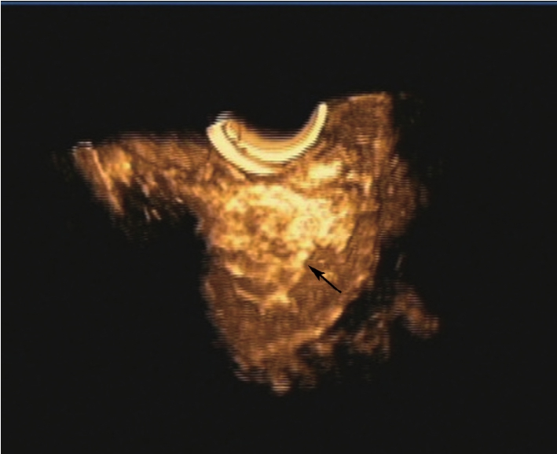
图4-24-3 子宫内膜癌超声造影图像，病灶呈不均匀高增强(箭头)
【鉴别诊断】
内膜癌与正常内膜及内膜增生症的增强模式不同，主要表现为增强顺序的改变，内膜癌病灶增强早于肌层，与正常内膜及内膜增生症相反，超声造影检查有助于内膜癌与内膜增生症的鉴别。部分短蒂的内膜息肉与肌层常无明显的灌注时相差而难以与内膜癌鉴别，此时需结合宫腔造影检查。
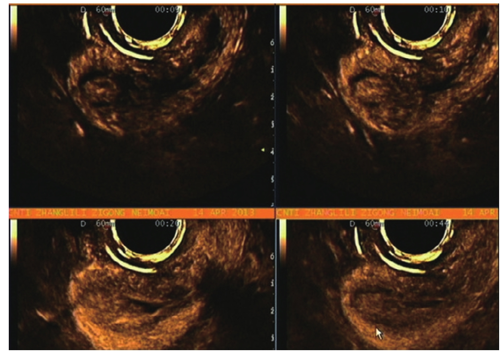
图4-24-4 子宫内膜癌超声造影图像
五、宫颈癌
超声造影检查可显示宫颈癌组织中微循环的改变，为临床诊断和分期提供更多有用的信息，有助于宫颈癌治疗方式的选择和疗效的提高。
检查方法
同静脉盆腔超声造影检查。
【造影表现及难点解析】
病理生理学研究显示，宫颈癌组织为适应肿瘤快速生长的需要而促使大量新生血管形成，这种新生血管管壁薄，缺乏弹力纤维，常存在动静脉分流，血流速度快且阻力较低，与周围组织的灌注不同，超声造影可实时显示该部分组织微循环的改变。在宫颈浸润癌的诊断方面，超声造影具有高的准确率，即使对于ⅠB期宫颈无明显形态变化的患者，超声造影仍可明确提示局部血流灌注与正常宫颈的不同，对其作出明确诊断。宫颈癌的超声造影特点是动脉期病灶区域内的血管早于肌层，快速灌注呈均匀或不均匀高增强，与周围正常组织明显不同，静脉期因内部血流速度较快，故造影剂快速消退呈低增强，但周边部造影剂滞留时间较长呈稍高增强，可较清楚地显示出病灶区的范围及邻近组织浸润情况，可对浸润癌作出较明确诊断并能较清晰显示病灶边界。
六、卵巢肿瘤
卵巢肿瘤是妇科常见病，而卵巢恶性肿瘤在妇科恶性肿瘤的死亡率中占第一，其种类之繁多、组织类型之复杂居各肿瘤之首，近年来发病率呈上升趋势。卵巢良恶性肿瘤的鉴别一直是现代医学的一个难点，因可疑卵巢癌而行手术治疗的病例1/3为良性。1994年Suren等首次通过静脉注射造影剂Levovist对30例卵巢小肿物进行观察，结果表明超声造影使小血管内的低速血流得以显示，因而观察者可以获得较传统彩超更丰富的血流信息;在此基础上多普勒频谱也得以测出或增强。他们认为超声造影有助于卵巢良恶性肿瘤的鉴别，并可弥补由于超声检查仪器灵敏度有限而造成的误诊。
检查方法
1.检查方法同静脉超声造影检查。
2.注意事项 卵巢肿瘤的超声造影可以通过经阴道途径减少呼吸的影响，但对于超过10cm的较大卵巢肿瘤和位置较高的肿瘤，仍然受高频探头穿透力低的影响，需要选用经腹探头进行超声造影检查。确定取样范围时要尽量包括整个病灶，才能有效反映造影剂在病灶中的灌注方式，所以造影选取的卵巢肿物不应过大。
【难点解析】
肿瘤的生长和转移有赖于血管生成。不同肿瘤的血管组成和血供有其自身的特点，良性肿瘤血管形成较慢，而恶性肿瘤由于其高代谢和肿瘤组织的快速生长，血管形成较多，其新生血管管壁薄、血管平滑肌含量少。卵巢良性与恶性肿瘤在造影后其血管数目、形态及分布区别更明显，因此，了解肿瘤组织的新生血管生成情况对于判断肿瘤的良恶性极为重要。
1.卵巢良性肿瘤
常表现为形态规则、包膜完整、肿物内无乳头或少乳头，多数为囊性或以囊性为主的混合性包块，而多房性囊肿其囊壁及分隔较薄，血管多位于肿瘤包膜及分隔上，光滑，直或轻度扭曲，见稀疏分支，血管间无分流，造影剂灌注多晚于正常子宫肌层。
(1)卵巢囊性肿瘤超声造影表现:
单纯性卵巢囊肿仅表现为囊壁或囊内分隔上呈稍高增强或等增强(与子宫肌层相比)，囊肿内部造影剂灌注缺失呈无增强;子宫内膜异位囊肿及黄体血肿，如病灶呈混合性回声或低回声，造影后可使囊壁形态勾画清晰，囊内无组织活性部分无造影剂灌注，有助于不典型子宫内膜异位囊肿(图4-24-5)及黄体血肿(图4-24-6)的诊断。
浆液性囊腺瘤、黏液性囊腺瘤等囊性病变，如果发现囊壁上小的乳头状凸起，CDFI常难以确定凸起内有无血流信号，难以与血凝块或组织碎屑鉴别，超声造影后，依据病灶内有无造影剂灌注可准确判断凸起病灶内的血供状况。
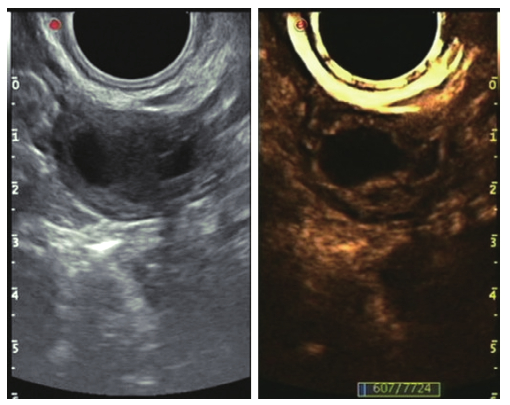
图4-24-5 子宫内膜异位囊肿超声造影图像
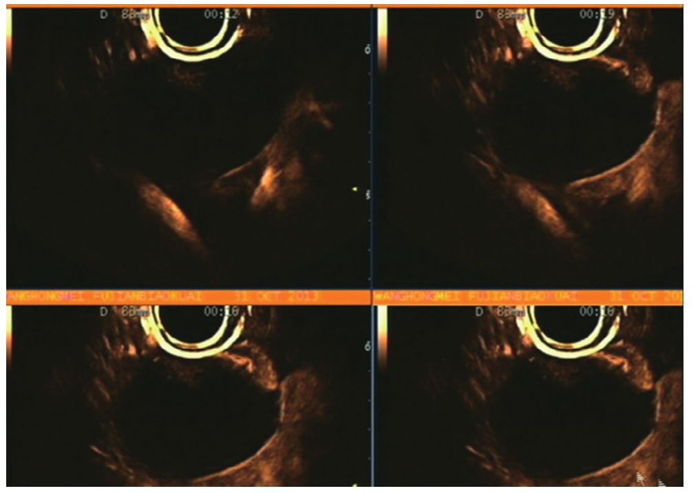
图4-24-6 黄体血肿超声造影图像
(2)卵巢畸胎瘤:
因所含成分不同而呈现不同的CDFI及超声造影表现。多数成熟型畸胎瘤的二维声像图较典型，内部无血流信号，未见造影剂充盈，诊断较容易，超声造影并未提供更多的诊断信息(图4-24-7)。伴甲状腺成分或神经胶质成分的成熟型畸胎瘤则与多数成熟型畸胎瘤不同，可呈囊实混合性肿块，常血流丰富，可伴有腹腔积液。超声造影显示该类病变实质性成分内有造影剂灌注，通常灌注晚于子宫肌层，消退较早，灌注后病灶较暗淡。
(3)卵巢纤维瘤:
多为实质性，瘤体包膜及内部血流多不丰富，如伴有变性可呈囊实混合性。超声造影后可见病灶内造影剂呈絮状逐渐充盈，散在分布，较稀疏，伴随出血坏死或囊性变时可出现不规则充盈缺损区，通常灌注晚于子宫肌层，消退较早(图4-24-8)。
(4)卵泡膜细胞瘤:
病灶以实性为主，增强的外壁欠规整，包膜完整，肿瘤实质内可见较弱增强，欠均匀。
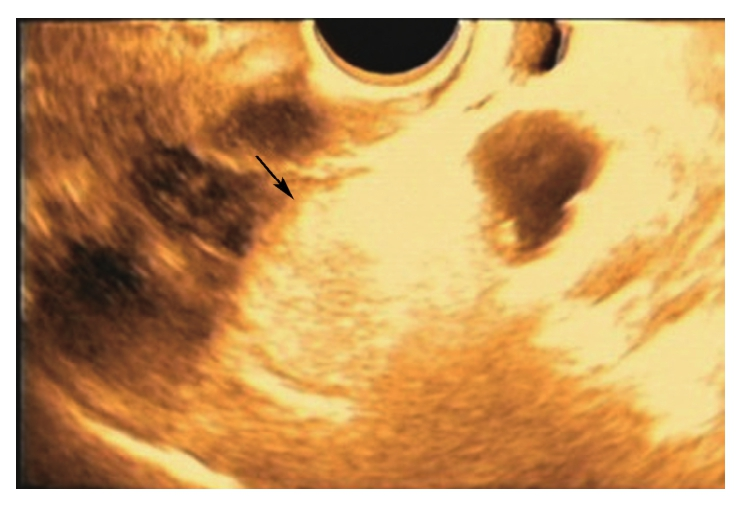
图4-24-7 成熟型畸胎瘤超声造影图像(箭头)
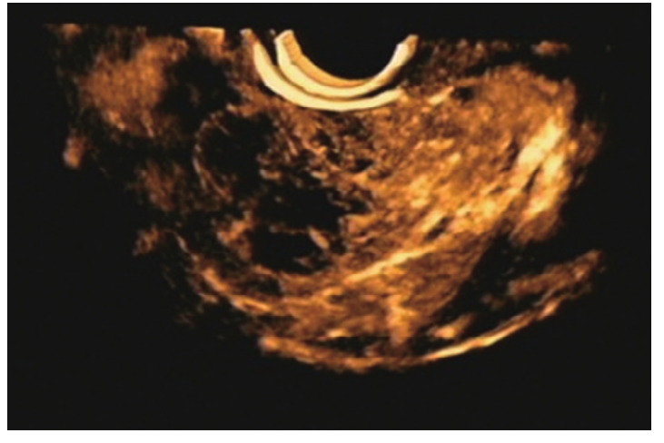
图4-24-8 卵巢纤维瘤超声造影图像
2.卵巢恶性肿瘤
多为双侧，多房，可见较多实性区域，外形不规则，内壁多乳头，内部回声不规则。恶性肿瘤周边可见包绕血流，瘤体内实性部分及肿瘤中央部的新生血管杂乱排列。恶性肿瘤的生长及转移依赖于间质血管形成，并具有其自身的特征:血管通透性增强、血流淤滞、走行不规则、动静脉短路较多、血管平滑肌较少、血管末端存在静脉池，导致造影后恶性肿瘤造影显示比良性信号强、造影出现时间早、持续时间长。有学者认为造影剂在恶性肿瘤内停留时间明显长于良性肿瘤，是由于造影剂微泡停留在恶性肿瘤组织扩张的盲端血管内所致;恶性肿瘤内造影剂灌注强于良性肿瘤，是由于动静脉瘘形成使肿瘤组织毛细血管床旁路增加，从而相对减少了造影剂微泡在血浆中的自然破裂。造影后大部分瘤体造影剂灌注早于子宫肌层，小部分与肌层同步，肌瘤内部造影剂分布不均，可见坏死及液化的无增强区，瘤体整体呈不均匀高增强。增强晚期瘤体内部造影剂轮廓晚于肌层。
(1)卵巢颗粒细胞瘤:
肿瘤增强后外壁不规整，以实性为主，肿瘤实质内明显增强，欠均匀(图4-24-9)。
(2)输卵管浆液性腺癌:
肿瘤以实性为主，增强的外壁不规整，肿瘤实质内可见明显增强，欠均匀，有时可见不增强的不规则坏死区。
【鉴别诊断】
对于内部有实性乳头状突起或实性成分较多的附件囊性肿块，普通超声对卵巢囊腺瘤与内膜异位囊肿或畸胎瘤难以鉴别时，超声造影由于可明确乳头或实性回声内部有无血流灌注，故鉴别诊断有明确价值。
普通超声对浆膜下子宫肌瘤与实性成分为主的卵巢良性肿瘤鉴别较困难，而超声造影时上述2种病变具有不同的血流灌注特点，可为鉴别诊断提供可靠依据。
此外，卵巢肿瘤超声造影中，时间-强度曲线也是观察的重要方面，可以反映造影剂在病灶内的代谢情况。在良恶性肿瘤中曲线上升支均陡直，下降支在良性肿瘤中为早期快降和晚期慢降，而恶性肿瘤则为直线慢降。造影剂作用持续时间、廓清时间及曲线下面积恶性显著高于良性，开始增强时间和到达高峰时间恶性显著小于良性。这些可作为鉴别卵巢良恶性肿瘤的良好指标。
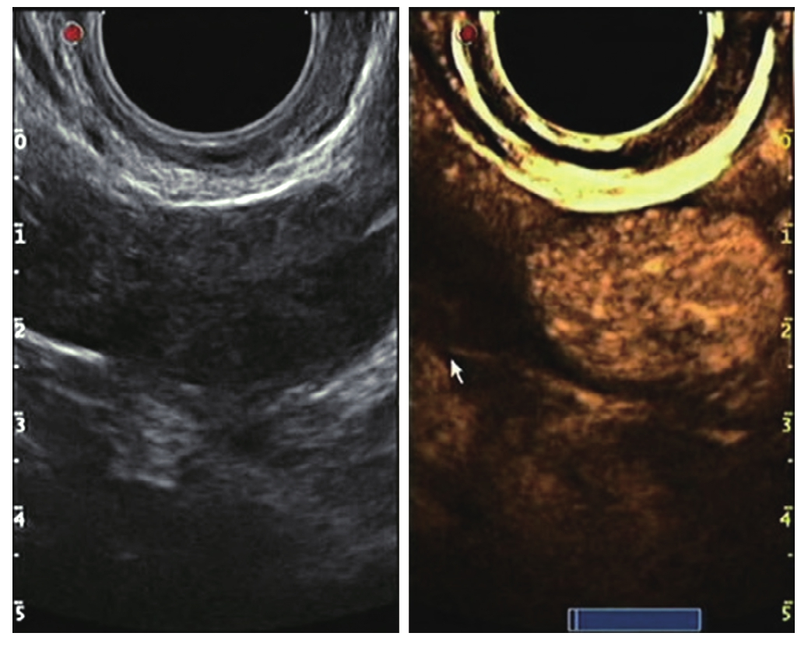
图4-24-9 颗粒细胞瘤超声造影图像
七、输卵管病变
输卵管病变是女性不孕的重要因素，据报道，在不孕的育龄期妇女中，输卵管梗阻占20%。各种原因引起的输卵管狭窄、堵塞、蠕动受限使精子或卵子不能通过输卵管，炎症是最常见的原因。子宫输卵管超声造影(HyCoSy)是指在超声监视下，通过向宫腔内注入超声造影剂，在实时动态情况下清晰显示子宫输卵管的充盈、造影剂的走向、排空及伞端逸出、阴道有无气泡、液体反流等情况。操作方便、患者痛苦小、无放射线损伤，研究表明其诊断输卵管通畅与否的准确性与X线子宫输卵管碘油造影相同，自1996年起已有大量研究推荐该方法应作为不孕患者首选的无创检查方法，以筛选需进一步行腹腔镜或宫腔镜检查或治疗的患者。
检查方法
1.造影剂
包括无菌生理盐水、双氧水、超声晶氧系内给氧药物、Echovist、SonoVue等。
2.造影导管
采用顶端带有气囊的双腔导管。
3.造影时间选择
时间通常选择子宫内膜增殖早期，以避免增厚的子宫内膜干扰造影剂经子宫腔进入输卵管内。
4.操作方法
嘱患者排空膀胱，取仰卧截石位。造影前常规超声在纵切、横切面仔细检查子宫、卵巢及双侧附件区，注意直肠子宫陷凹有无液体及其量。
常规消毒阴道及子宫颈。用窥器扩张阴道，显示子宫颈并仔细消毒，用生理盐水子宫腔超声造影相同的方法，经子宫颈将导管轻柔地送入子宫腔内，通常无须宫颈钳牵拉宫颈，除非子宫过度扭曲。撤除窥器，插入阴道探头，先行子宫纵切，检查导管位置，确定导管气囊位于子宫颈内口稍上水平。导管位置过低，在造影操作过程中易滑出子宫腔外;位置过高，强回声的气囊会干扰子宫腔结构的观察。确认导管位置合适后，经与气囊相通的管腔注入1ml生理盐水，将导管顶端的气囊充盈。充盈的气囊在宫腔内显示为无回声，若气囊位置过高，可稍向宫颈口方向拉动导管，将气囊置于宫颈内口稍上方，在导管另一腔的末端接一注射器，用于注射造影剂。
在进行输卵管造影前，先向子宫腔内注入约2ml生理盐水，当宫腔内出现线样无回声区后，将导管气囊放气后使其瘪掉，而后向宫腔内注入适量未振荡的生理盐水，行宫腔造影。宫腔造影结束后向子宫腔内缓慢注入造影剂。
【难点解析】
经阴道超声探查，采用子宫底横切面扫查，并稍倾斜探头，找到同侧卵巢，在卵巢与子宫角之间通常为输卵管的位置。如输卵管通畅，可见到含气泡的强回声经输卵管伞端进入盆腔，向卵巢周围移动，并在卵巢周围形成动荡的强回声;在显像条件较好的患者，可见到造影剂呈线样强回声通过输卵管达到盆腔内，使整个输卵管腔的形态被显示出来。因此可观察输卵管有无扭曲、狭窄部位，伞端闭锁时可见输卵管腔近段充满造影剂强回声。
如输卵管不通，则见不到上述现象。观察完一侧后，旋转探头，再观察另外一侧输卵管。
1.双侧输卵管通畅
宫腔内液气泡向两侧输卵管流动迅速，各段显示强光带，伞端见“喷射状”气体聚集的光团回声，很快观察到卵巢周围或子宫两侧被强回声环绕，并可见直肠子宫陷凹内带状无回声区，推注造影剂无阻力，无气泡及液体反流(图4-24-10)。
2.双侧输卵管梗阻
宫腔内液气泡向两侧流动缓慢或聚集于某一段，双侧输卵管部分或完全不显示气泡及光带，伞端无气流及光团。造影剂部分从宫颈反流入阴道，盆腔无气体弥散，推注过程中阻力较大。
3.单侧输卵管通畅
单侧呈现通畅声像图，另一侧呈现不通畅声像图，盆腔显示少量气体回声。
4.输卵管不全梗阻
宫腔内液气泡流动缓慢，输卵管显示纤细光带，伞端见少量气泡移动，射流征不明显，注射侧酸胀明显但能忍受，盆腔见少量气流回声，术毕检查直肠子宫陷凹处有无积液及与术前对比(图4-24-11)。
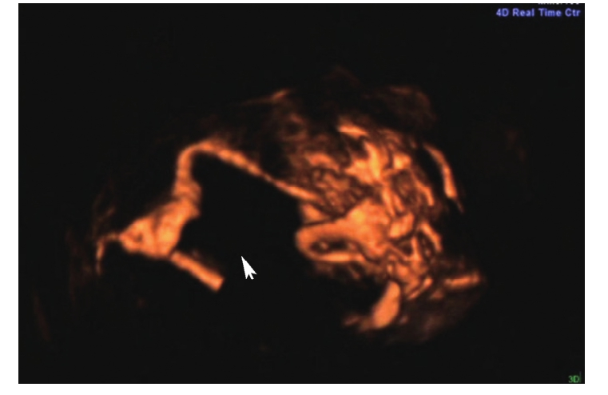
图4-24-10 双侧输卵管通畅
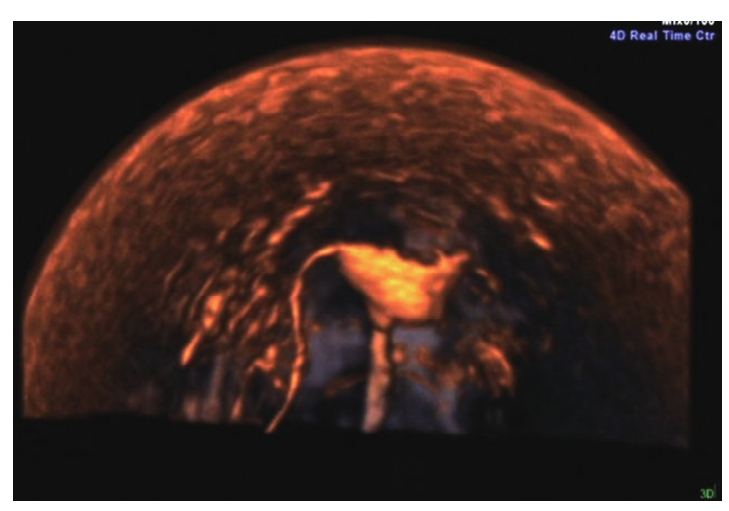
图4-24-11 右侧纤细、通畅，左侧不通